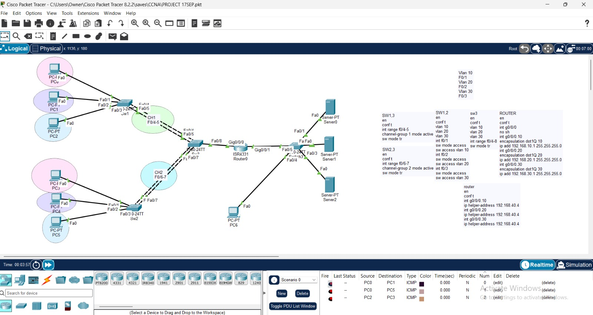
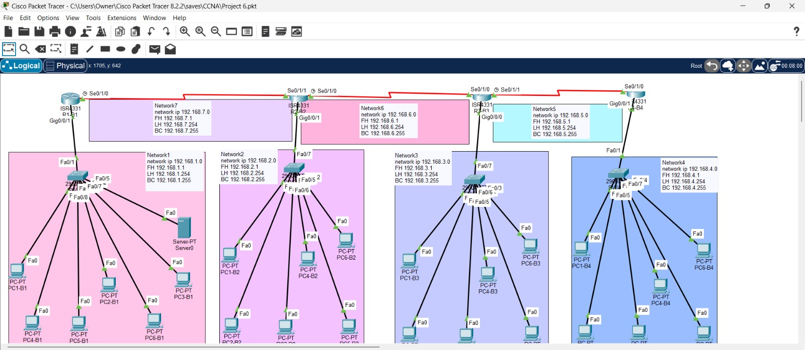
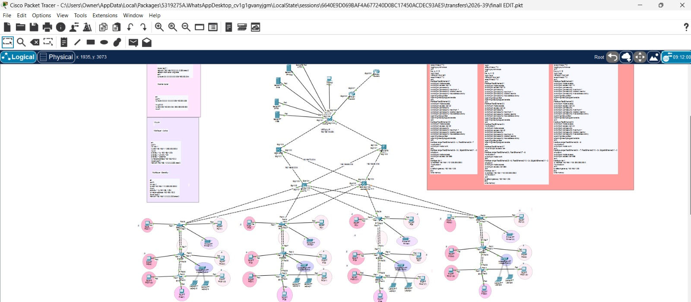

Building the Future of Network Infrastructure
A professional portfolio showcasing our practical journey through enterprise networking, routing, switching, network security, infrastructure design, and real-world simulations.
People Behind The Infrastructure
A collaborative team focused on building practical networking knowledge and applying enterprise infrastructure concepts through hands-on training.
Dr. Aya Magdy
Academic supervision and technical guidance across network infrastructure, routing architecture, and practical enterprise networking.
Ziad Hany Mohamed
Focused on dynamic routing, OSPF multi-area architecture, switching technologies, and enterprise topology design.
Rana Ibrahim Abu Shosh
Focused on firewall policies, ACL implementation, VPN architectures, and secure network access control.
Rodina Ahmed Fouad
Focused on Wireshark analysis, network traffic inspection, troubleshooting, and packet-level diagnostics.
Rahma Waleed Ezzeldin
Focused on VLSM, IPv4 and IPv6 addressing, DHCP, and scalable enterprise IP addressing architecture.
Elany Ayman Fayek
Focused on GNS3, Cisco Packet Tracer, topology simulation, testing, and network failover scenarios.
What We Learned
A practical curriculum covering the essential technologies required to design, operate, secure, and troubleshoot modern networks.
Routing & Switching
OSPF, EIGRP, BGP, VLANs, STP, inter-VLAN routing, trunking, and redundancy.
Network Security
Firewalls, ACLs, IPsec VPNs, NAT/PAT, port security, and secure network segmentation.
IP Addressing
IPv4, IPv6, VLSM, subnetting, DHCP, address planning, and scalable IP allocation.
Troubleshooting
Packet analysis, connectivity diagnostics, topology testing, and structured troubleshooting.
Featured Projects
Practical network scenarios designed and simulated during the training journey.

Project 01Cisco Packet Tracer Network Topology (VLANs & Inter-VLAN Routing)
Enterprise Routing Architecture
The image shows a computer network simulation created in Cisco Packet Tracer. The topology consists of multiple client PCs and servers segregated into distinct Virtual LANs (VLANs). These devices connect through switches configured with EtherChannel link aggregation for redundancy and higher bandwidth, all routed through a central router implementing Inter-VLAN routing (Router-on-a-Stick setup). The right side includes configuration notes (CLI commands) for the switches and router, including sub-interface settings and IP helper address configurations.

Project 02Multi-Branch WAN Topology with Serial Links (Packet Tracer)
Infrastructure Security
The image shows a Wide Area Network (WAN) simulation built in Cisco Packet Tracer. The topology represents a multi-branch network interconnected via point-to-point Serial Links across four ISR4331 routers. It includes four distinct local area networks (LANs/branches)—color-coded in pink, purple, light blue, and dark blue—each equipped with a switch connected to multiple end-user PCs and servers. Each subnet features detailed IP addressing documentation, including network ID, first host, last host, and broadcast address allocations.

Final ProjectFinal Project
The image shows a comprehensive, highly redundant Enterprise Campus Network design simulated in Cisco Packet Tracer. It strictly follows Cisco's three-tier hierarchical design model consisting of the Core, Distribution
Developed an optimized IPv4 addressing scheme using VLSM while preparing the infrastructure for dual-stack IPv6 deployment.
Technical Skills
Tools, technologies, and networking concepts explored throughout the training program.
Cisco Networking
Routers & Switches
Routing Protocols
OSPF • EIGRP • BGP
VLAN & Switching
VLAN • STP • Trunking
Network Security
Firewall • ACL • VPN
Packet Tracer
Network Simulation
GNS3
Advanced Simulation
Wireshark
Packet Inspection
IP Subnetting
VLSM • IPv4 • IPv6
From Concepts to Real Topologies
The training combined theoretical networking concepts with practical simulations, allowing the team to progressively build and troubleshoot increasingly complex network environments.
01. Foundations
Built a strong foundation in networking fundamentals, protocols, addressing, and infrastructure components.
02. Infrastructure Design
Applied routing, switching, VLAN segmentation, subnetting, and redundancy to practical network topologies.
03. Security & Troubleshooting
Implemented security controls and practiced systematic approaches to identifying and resolving network issues.
04. Capstone Projects
Combined the acquired skills into practical enterprise scenarios and complete simulated network environments.
Engineering Networks That Connect
A practical showcase of the knowledge, teamwork, and technical experience developed throughout the NTI ITIDA Network Infrastructure training journey.